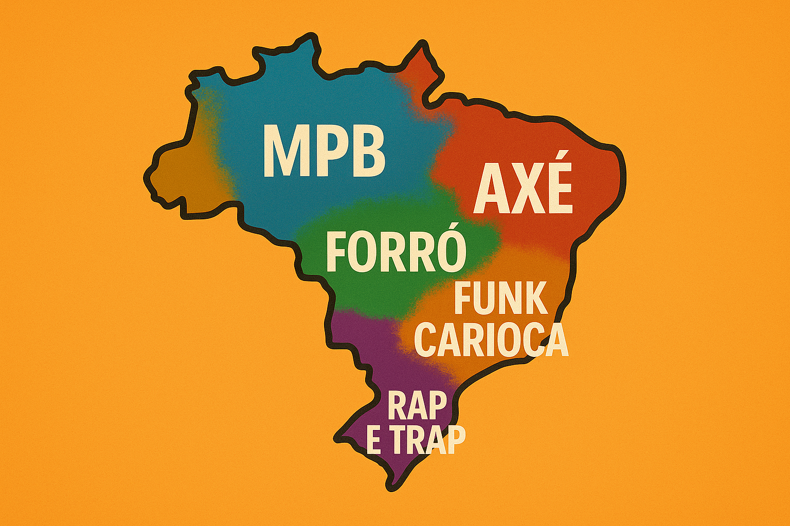

Gêneros

- Funk carioca surgiu nas periferias do Rio de Janeiro, com forte influência do Miami Bass, e ganhou o país
com batidas marcantes e letras que abordam desde ostentação e sensualidade até críticas sociais. Subgêneros
como o funk consciente e o funk 150 BPM ajudaram a ampliar sua popularidade. Nomes como Anitta, DJ Pedro
Sampaio e MC Kevin o Chris são expoentes do estilo.
- Sertanejo é um dos gêneros mais ouvidos no Brasil, com raízes na música caipira do interior. Ao longo do
tempo, evoluiu para o chamado sertanejo universitário, mais comercial e voltado para temas de amor, festas e
"sofrência". Artistas como Marília Mendonça, Gusttavo Lima e Jorge & Mateus são alguns dos principais nomes
desse estilo que domina rádios e plataformas de streaming.
- Pagode é uma vertente moderna do samba que surgiu nos anos 1980, com letras mais românticas e arranjos
suaves. É muito presente em rodas de samba, festas e rádios, com artistas como Thiaguinho, Ferrugem e
Dilsinho trazendo um som leve e emocional que fala de amor, amizade e relacionamentos.
- MPB (Música Popular Brasileira) é um gênero amplo que mistura elementos do samba, bossa nova, rock e até
jazz, geralmente com letras poéticas e engajadas. É mais presente entre públicos que buscam sofisticação musical e tem
nomes consagrados como Caetano Veloso, Gilberto Gil e Elis Regina. Apesar de não ser o gênero mais popular entre
os jovens, ainda tem grande relevância cultural.
- Axé é um ritmo festivo originado na Bahia, muito ligado ao Carnaval, que mistura influências do samba-reggae,
frevo e ritmos africanos. É animado, dançante e se espalhou pelo país através de artistas como Ivete Sangalo,
Claudia Leitte e Bell Marques. Já o forró, popular no Nordeste, tem variações como o forró eletrônico e o
tradicional pé-de-serra, com nomes como Wesley Safadão e Falamansa mantendo o estilo vivo em festas juninas e
shows pelo país.
- Rap e trap nacional vêm crescendo fortemente nos últimos anos, com letras que falam sobre a realidade das
periferias, identidade, política, e também sobre conquistas e ostentação. Fortemente influenciado pelo hip-hop
americano, o trap brasileiro tem artistas como Matuê, Teto, Filipe Ret e Djonga conquistando as paradas com um
estilo moderno, urbano e direto.
- Pop brasileiro é um gênero flexível que costuma absorver elementos do funk, eletrônico, MPB e rap, com foco em
produção moderna e apelo comercial. Artistas como Anitta, Luísa Sonza, Jão e IZA misturam estilos para criar
hits que falam sobre empoderamento, relacionamentos e estilo de vida, mantendo grande presença na mídia e nas
redes sociais.